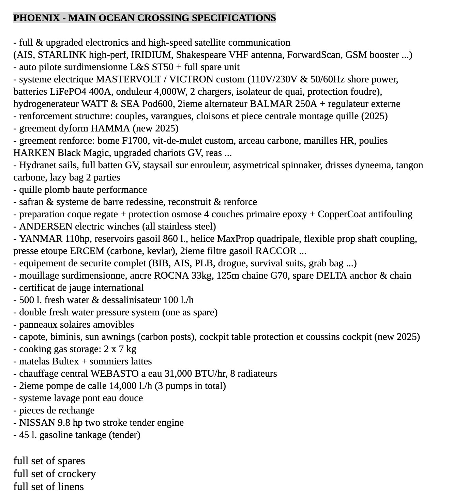
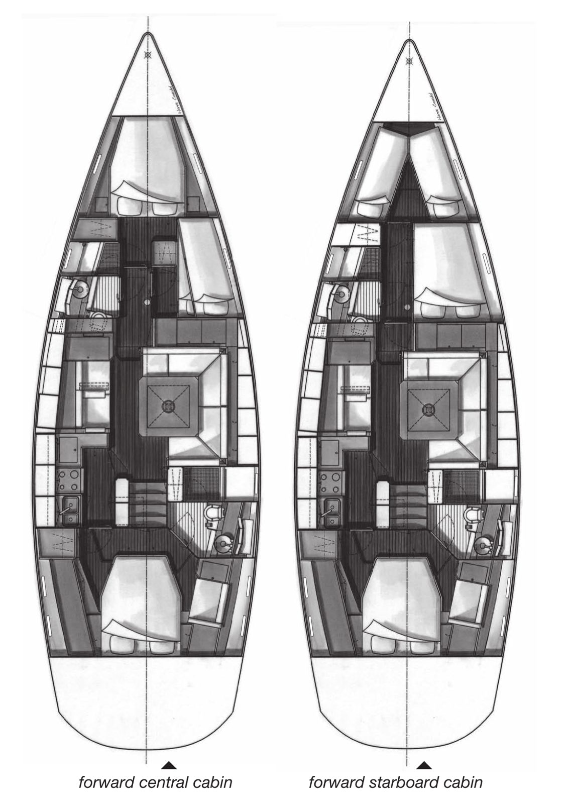
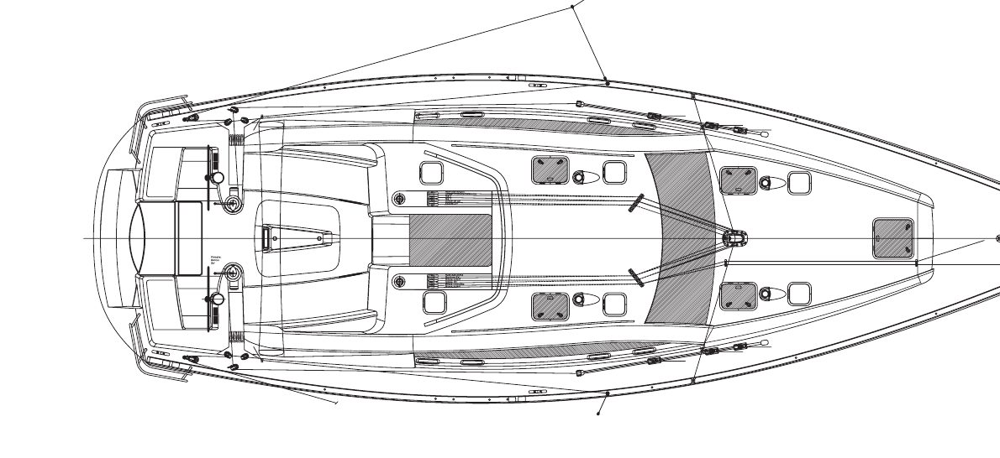

Phoenix
Phoenix
Phoenix
Phoenix
Two documents · the broker’s sheet for this boat, then the factory specification for the class
First, the broker’s “Phoenix – Main Ocean Crossing Specifications” sheet, which describes this boat as she is equipped now. Second, the Wauquiez Pilot Saloon 47 specification, which describes the class as delivered from the yard. Where the two disagree, the broker’s sheet is the boat and the factory sheet is the baseline: fuel 860 L against 650 L, water 500 L against 615 L, a lead keel against the factory’s iron bulb, and a MaxProp four-blade against a three-blade.
Broker document · BVI Yacht Sales, 2026
The sheet is written in a mix of French and English. Each line is reproduced below as printed, with an English rendering beside it and a short label added for reading. The original sheet image is below the table.
| Item | As printed (French and English) | English |
|---|---|---|
| Electronics | Full & upgraded electronics and high-speed satellite communication (AIS, Starlink high-perf, Iridium, Shakespeare VHF antenna, ForwardScan, GSM booster …) | Full, upgraded electronics and high-speed satellite communications. |
| Autopilot | auto pilote surdimensionné L&S ST50 + full spare unit | Oversized L&S ST50 autopilot plus a full spare unit. |
| Electrical | système électrique MASTERVOLT / VICTRON custom (110V/230V & 50/60Hz shore power, batteries LiFePO4 400A, onduleur 4,000W, 2 chargers, isolateur de quai, protection foudre), hydrogénérateur WATT & SEA Pod600, 2ième alternateur BALMAR 250A + régulateur externe | Custom Mastervolt/Victron system: 110/230 V and 50/60 Hz shore power, LiFePO4 400 A, 4,000 W inverter, 2 chargers, shore isolation transformer, lightning protection. Watt & Sea Pod600 hydrogenerator. Second Balmar 250 A alternator with external regulator. |
| Structure | renforcement structure: couples, varangues, cloisons et pièce centrale montage quille (2025) | Structural reinforcement: frames, floors, bulkheads and the keel-mount centre piece (2025). |
| Standing rigging | gréement dyform HAMMA (new 2025) | Hamma Dyform standing rigging, new 2025. |
| Running rig | gréement renforcé: bôme F1700, vit-de-mulet custom, arceau carbone, manilles HR, poulies HARKEN Black Magic, upgraded chariots GV, etc … | Reinforced rig: F1700 boom, custom vang, carbon arch, HR shackles, Harken Black Magic blocks, upgraded mainsheet cars, and more. |
| Sails | Hydranet sails, full batten GV, staysail sur enrouleur, asymetrical spinnaker, drisses dyneema, tangon carbone, lazy bag 2 parties | Hydranet sails: full-batten main, furling staysail, asymmetric spinnaker. Dyneema halyards, carbon pole, two-part lazy bag. |
| Keel | quille plomb haute performance | High-performance lead keel. |
| Rudder | safran & système de barre redessiné, reconstruit & renforcé | Rudder and steering system redesigned, rebuilt and reinforced. |
| Hull | préparation coque régate + protection osmose 4 couches primaire epoxy + CopperCoat antifouling | Race-prepared hull, four-coat epoxy primer osmosis protection, CopperCoat antifouling. |
| Winches | ANDERSEN electric winches (all stainless steel) | Andersen electric winches, all stainless steel. |
| Engine | YANMAR 110hp, réservoirs gasoil 860 l., hélice MaxProp quadripale, flexible prop shaft coupling, presse étoupe ERCEM (carbone, kevlar), 2ième filtre gasoil RACCOR … | Yanmar 110 hp, 860 L diesel tankage, MaxProp four-blade propeller, flexible shaft coupling, ERCEM carbon/Kevlar shaft seal, second Racor fuel filter. |
| Safety | équipement de sécurité complet (BIB, AIS, PLB, drogue, survival suits, grab bag …) | Complete safety equipment: life raft, AIS, PLB, drogue, survival suits, grab bag. |
| Ground tackle | mouillage surdimensionné, ancre ROCNA 33kg, 125m chaîne G70, spare DELTA anchor & chain | Oversized ground tackle: Rocna 33 kg, 125 m G70 chain, spare Delta anchor and chain. |
| Certificate | certificat de jauge international | International rating certificate. |
| Water | 500 l. fresh water & dessalinisateur 100 l./h | 500 L fresh water and a 100 L/h watermaker. |
| Pressure water | double fresh water pressure system (one as spare) | Double fresh-water pressure system, one as a spare. |
| Solar | panneaux solaires amovibles | Removable solar panels. |
| Canvas | capote, biminis, sun awnings (carbon posts), cockpit table protection et coussins cockpit (new 2025) | Sprayhood, biminis, sun awnings on carbon posts, cockpit table cover and cockpit cushions (new 2025). |
| Gas | cooking gas storage: 2 x 7 kg | Cooking gas storage: 2 × 7 kg. |
| Berths | matelas Bultex + sommiers lattés | Bultex mattresses on slatted bases. |
| Heating | chauffage central WEBASTO à eau 31,000 BTU/hr, 8 radiateurs | Webasto hydronic central heating, 31,000 BTU/hr, 8 radiators. |
| Bilge | 2ième pompe de cale 14,000 l./h (3 pumps in total) | Second bilge pump at 14,000 L/h (3 pumps in total). |
| Deck wash | système lavage pont eau douce | Freshwater deck-wash system. |
| Spares | pièces de rechange | Spare parts. |
| Tender engine | NISSAN 9.8 hp two stroke tender engine | Nissan 9.8 hp two-stroke tender engine. |
| Tender fuel | 45 l. gasoline tankage (tender) | 45 L gasoline for the tender. |
| Inventory | full set of spares · full set of crockery · full set of linens | Full sets of spares, crockery and linens. |

Wauquiez factory specification · Pilot Saloon 47 class
This is page 1 of the two-page factory specification, rebuilt from the PDF; page 2 is the same text in French. The wording is the builder’s, including its typos (it says “Pilot Saloon 55” once). It describes standard equipment and options, not Phoenix’s inventory. Original: PDF, 1.5 MB.
| General characteristics | |
|---|---|
| L.O.A. | 14,36 m |
| L.W.L. | 12,75 m |
| Maximum beam | 4,61 m |
| Standard draft | 2,10 m |
| Shoal keel draft (lead) | 1,80 m |
| Deep keel draft (lead) | 2,35 m |
| Light displacement | 14 000 Kg |
| Standard draft ballast weight | 3 900 Kg |
| Deep draft ballast weight | 3 700 Kg |
| Shoal draft ballast weight | 4 080 Kg |
| Fuel capacity | 650 l |
| Fresh water capacity | 615 l |
| Engine | 110 HP |
| Sail plan | |
|---|---|
| I | 18,45 m |
| J | 5,22 m |
| P | 17,35 m |
| E | 6,40 m |
| Grand voile / Main sail | 62 m² |
| Solent 110% | 53.4 m² |
| Code 0 / Reaching genoa | 95 m² |
| Design | |
|---|---|
| Design by | Berret - Racoupeau Yacht Design |
| Interior design by | Couëdel Hugon Design |
| Shipyard | Wauquiez (France) |
| Design category (CE) | Category A, 8 persons |
Draft note: the factory standard draft is 2,10 m (6 ft 11 in), which matches the 2025 repair report. The listing’s 8 ft 0 in is closer to the 2,35 m (7 ft 9 in) deep keel. The broker’s sheet says “high-performance lead keel”. Which keel Phoenix carries is still an open question.


The interior woodwork of the Pilot Saloon 55 [sic] is built in teak and beeswaxed. The floorboard are made in wengé. The deck is doubled with a GRP liner on which foamed vinyl covered slats are fastened. The hull liner is made in teak and / or vinyl covered slats. For an outstanding comfort mattresses are made of memory of form foam and cushions of «Bultex»™ double density foam. All berths are equipped with a slatted base and lee cloths and have cold molded teak fiddles around the beddings.
Non contractual document – information subject to modification without prior notice. Wauquiez Boats, Rue du Vertuquet, 59960 Neuville-en-Ferrain, France.